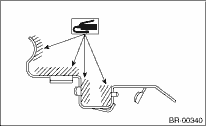
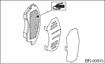

BRAKE > Front Brake Pad
1. Apply a thin coat of Molykote M7439 to the pad clip.

2. Apply a thin coat of Molykote AS880N (Part No. K0777YA010) to the frictional portion between inner pad and the rubber coat shim. (Australian model)
NOTE:
• Do not apply grease between the outer pad and the outer shim. (Australian model)
• Do not install the inner shim and outer shim incorrectly. (Australian model)
CAUTION:
Replace the pad if there is oil or grease adhering to the pad surface.

3. Install the pad to support.
4. Install the caliper body to the support.
Tightening torque:
26.5 N·m (2.7 kgf-m, 19.5 ft-lb)
NOTE:
If it is difficult to push the piston during pad replacement, loosen the air bleeder to facilitate work.